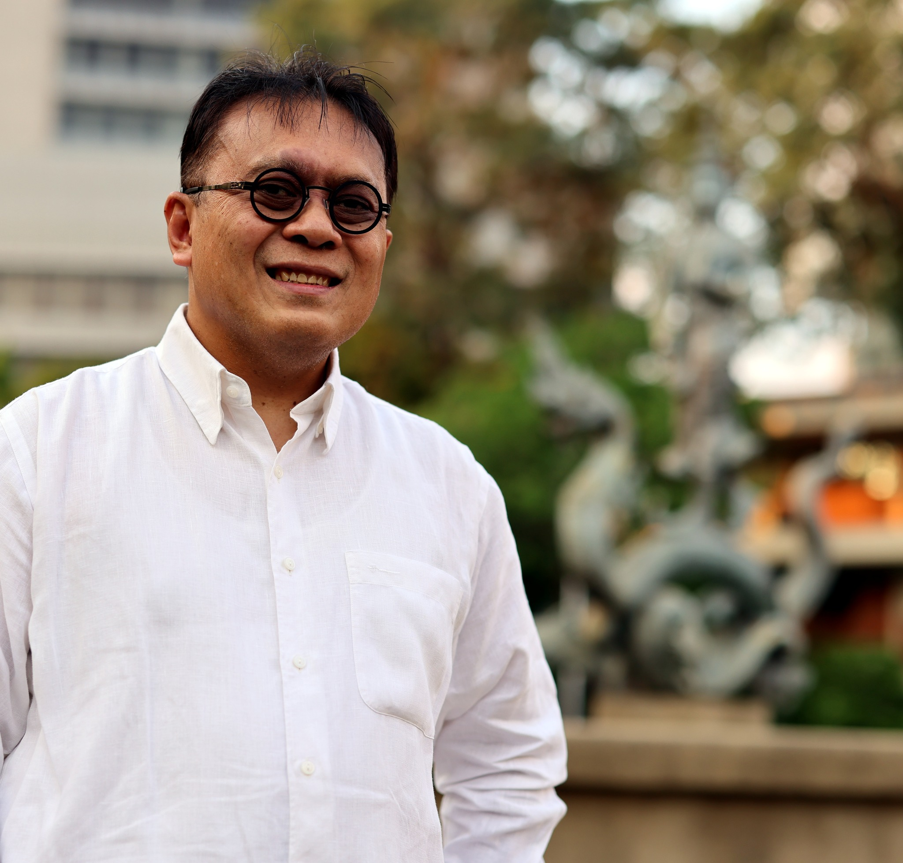

นี่คือช่วงเวลาที่มหาวิทยาลัยเกษตรศาสตร์ต้องตัดสินใจให้ชัด
{kind=link}

บทความนี้เป็นจุดประกาศอย่างชัดเจนของการตัดสินใจสมัครเข้ารับการสรรหาเพื่อดำรงตำแหน่งอธิการบดีมหาวิทยาลัยเกษตรศาสตร์ พร้อมกับการวางกรอบคิดว่ามหาวิทยาลัยกำลังเผชิญโลกที่เปลี่ยนเร็วกว่าเดิมจากแรงขับของ AI และเทคโนโลยี การพัฒนาอย่างยั่งยืน การแข่งขันระดับนานาชาติ และโครงสร้างประชากรที่เปลี่ยนไป
สารหลักของโพสต์ไม่ได้อยู่แค่การประกาศตัว แต่คือการตั้งคำถามว่า มหาวิทยาลัยเกษตรศาสตร์จะเลือกยืนอยู่ตรงไหนในโลกใหม่นี้ และยืนยันว่า มก. ไม่ควรเป็นเพียงผู้ตาม แต่ต้องเป็นมหาวิทยาลัยที่กำหนดทิศทางของสังคมและประเทศ
จากประสบการณ์ด้านวิชาการ การวิจัย และการพัฒนาหลักสูตร บทความนี้จึงสรุปโอกาสของมหาวิทยาลัยออกมาเป็นสามแกนใหญ่ คือการเป็นมหาวิทยาลัยที่ขับเคลื่อนด้วย AI และข้อมูล การพัฒนาแนวคิด Life Systems ที่เชื่อมเกษตร อาหาร สิ่งแวดล้อม และสุขภาพเข้าด้วยกัน และการวางตำแหน่งของมหาวิทยาลัยในเวทีโลกอย่างมีความหมาย
การเปลี่ยนผ่านต้องใช้พลังของทั้งมหาวิทยาลัย ไม่ใช่คนคนเดียว
แม้จะเป็นการอาสาเข้ามารับผิดชอบในจังหวะสำคัญ แต่บทความนี้ก็ย้ำชัดว่า การเปลี่ยนผ่านเช่นนี้ไม่สามารถเกิดจากคนคนเดียวได้ ต้องอาศัยพลังของทั้งมหาวิทยาลัย การรับฟังความคิดเห็นจากหลายฝ่าย และความเชื่อร่วมกันว่าเราต้องการการเปลี่ยนแปลงที่ชัดเจนและจริงจัง
มุมนี้ทำให้การสมัครไม่ได้ถูกวางเป็นเรื่องของตัวบุคคลล้วน ๆ แต่เป็นการเสนอตัวเพื่อรับผิดชอบต่อการจัดพลังขององค์กรให้เคลื่อนไปในทิศทางเดียวกัน
คำถามจริงคืออีก 10 ปีข้างหน้าเราอยากเห็น มก. เป็นแบบไหน
ปลายทางของบทความจึงอยู่ที่คำชวนคิดร่วมกันว่าอีก 10 ปีข้างหน้า เราอยากเห็น มก. เป็นแบบไหน และจะทำอย่างไรให้มหาวิทยาลัยไม่ใช่แค่อยู่รอด แต่สามารถสร้างคุณค่าให้ประเทศและโลกได้อย่างแท้จริง
นี่จึงเป็นบทความที่ทำหน้าที่ทั้งประกาศการตัดสินใจและวางเข็มทิศเชิงวิสัยทัศน์ของทั้งชุดความคิดว่า มหาวิทยาลัยต้องตัดสินใจให้ชัดในช่วงเวลาที่โลกเปลี่ยนเร็ว และต้องทำให้การเปลี่ยนแปลงนั้นเกิดขึ้นจริง